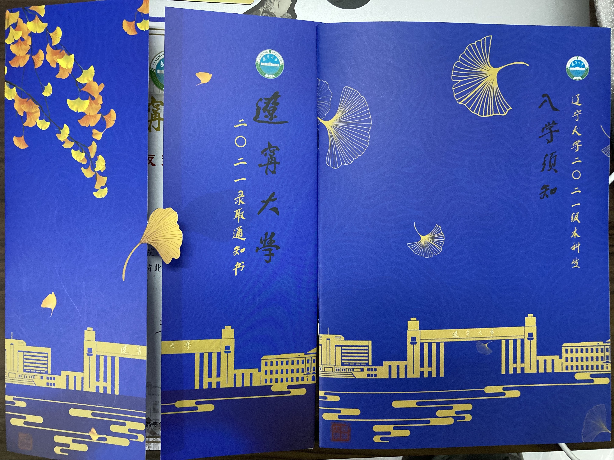

八月记：
录取通知书到啦

在通知书到来之前，一直在b站看别人通知书的开箱，无意间翻到了一个博士录取通知书开箱的视频，up是大喵阿白93年的一个姐姐，毕业于天中医，今年刚考上成中医的博士，好像考博的几个月一直直播，可惜我才发现她。
看了她以前的博客，好像是高三写的，和我高三时候一样，在现实面前一样的迷茫，而现在的她就是我想要成为的样子，不是说万般皆下品惟有读书高，而是我现在的出路只有读书这一条，只可惜以前我不重视。28岁读博，我也想呀，虽然我爸爸跟我说，我还能再读五年书，二学位两年，研究生三年。要是我能够考上研究生再考上博士，他也不会反对我继续读书吧。
爸爸要是当年不去读中专去读高中，也许能考一个比我本科好得多的大学，现在也不至于一直屈居于乡镇中学。还是当年家里穷，读中专能够直接去当老师，多的几年沉没的成本现实条件负担不起。现在家里都好起来了，不论我想考研，还是考研失败后去读第二学士学位，爸爸都很赞成。
------八月八日
突然想记一下，不知道是不是没谈过恋爱，还是太久没有和女生交流了，现在感觉一接触女生就会慌慌的，还会对她比较好奇。
------八月十日
其实中南财经政法大学很不错，辽宁大学也很好，只是我差了一点。第二次考研的时候，听了很多遍《下一站茶山刘》，可惜最终没能去茶山刘读书。武汉这个城市去过无数次，但是最终也不能在这里停留。
考了两次研，几乎每次都会有一两天从噩梦中惊醒，去中南财大复试的两天更是一直心跳加速、不安。步入中南财大校园，越看越是感觉这儿十分美好，也许是双非对211的向往，使得我在心里就开始对她美化了吧。
其实我还是十分愿意去东北看一看，去四川旅行的时候接触到过东北人，发现他们还是和我们一样，由内向的，也有外向的，和南方人没什么不同。虽说经济没有南方好，不过沈阳对于我这小镇上的人还是遥不可及的大城市。
------八月十一日
灯泡灭了，我仔细检查了下，钨丝并没有断。我重新按下开关，灯泡闪了两下又灭了。我问，你怎么了，不开心么。灯泡回答，等会儿，有个蛾子在窗外看我好久了。我说，那不挺好，有人看得上你。灯泡说，我不是火，别让她看错了，误了人一辈子。
今天突发奇想，在知乎上搜了一个问题，“被不喜欢的人告白是什么样的体验”，遥想当年我也对一个姑娘告白过，显然我就是那个她不喜欢的人，站在对方的角度看看，我好像一条狗啊。上面那句话，是一个回答。
看了一下回答，果然不喜欢的人在女生心里是那么一文不值。还看到一个回答，“如果想放下喜欢的人，那你就表白，开心地接受她的拒绝，如果你想跟她在一起，麻烦让自己变得更优秀，让他注意到你。”
昨天一时冲动，想把主机换个itx小机箱，就下单了itx主板，机箱+电源和猫头鹰下压式散热器，感觉可以把小机箱带到学校去，就还下单了一个便携式显示器。不过想了想，带去学校还是比较麻烦，可能不太用得上，不如再带一台我的旧windows笔记本，就把显示器退款了。不过后悔的时候，其他配件已经发货了，索性就算了，装一个itx主机吧，cpu用我原来的那一个，原来的主机会剩下一个机箱主板和电源，这几样等以后显卡降价了买一张显卡还有上一个更好的cpu。这样的小主机可以方便携带，还能连接电视机放电影。不过花了一千多块钱没提升配置确实有些心疼。感觉我又爱冲动消费，又爱焦虑我乱花钱了。想了想，钱都花了，与其焦虑，不如现在好好学习，以后好好工作，好好赚钱。不过现在还是在花家里的钱，还是剩一点为好。等到了学校就该省的省点，对自己差一点(顺便减减肥现在140减到120～130吧)，对别人好一点(同学，朋友，家人以及爱人-未来有的话)。
------八月十九日
服了git又不能用了
更新git token验证 视频链接🔗
等了好久，终于在昨天到学校了，新的生活，辽宁大学！说实话，我最喜欢大学里面的操场和图书馆了。
今天去了图书馆了，哎说实话，可能三大的图书馆还是挺适合我的。不过辽大也不错呀，食堂的东西确实多。这几天一直有坚持跑步，希望能够减减肥吧，不知道会不会像网上说的那样，对膝盖不好，不过跑了这么久了，膝盖确实还没有疼过。
每天本省的同学就要到了，不知道会不会安排什么活动，说实话到现在一班子人还没有集合过。想了想，要是不打游戏的话，在寝室学习还是挺好的，有网，有大桌子，还是挺适合自己独自学习吧，毕竟去年在家考研也是一个人，现在来了学校，和别人一起突然就有些不自在。
这几天去图书馆可谓是艰辛之路呀，刚开始门都进不去，等了一天之后录了人脸，能进了，早上去排预约自习室的自助机好长的队伍，到我了发现刷不上，太尴尬了。然后就等
------九月十四日
Give your hope everything you have got.
Give your hope everything you have got.